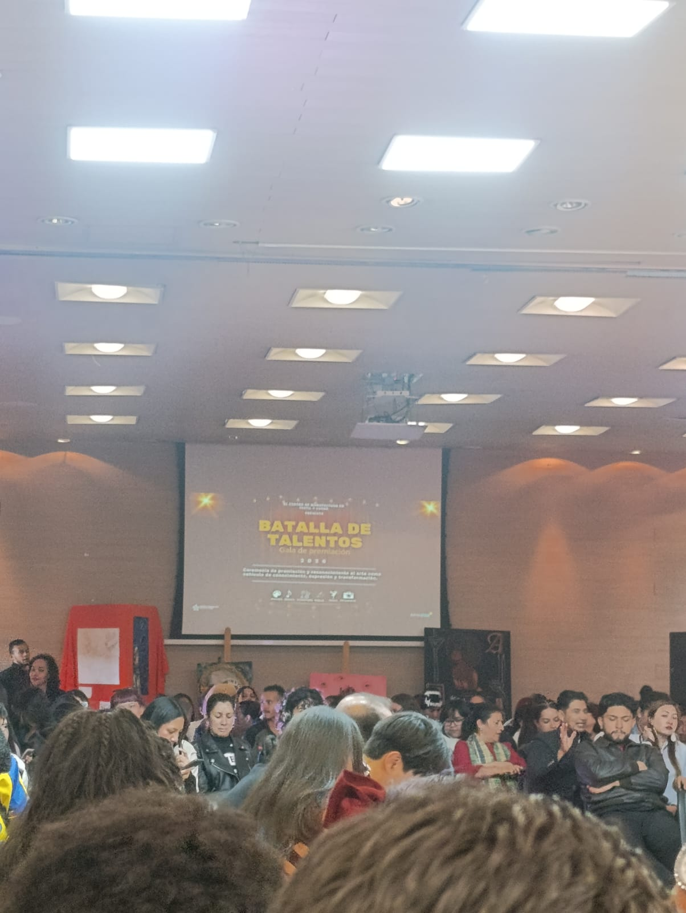
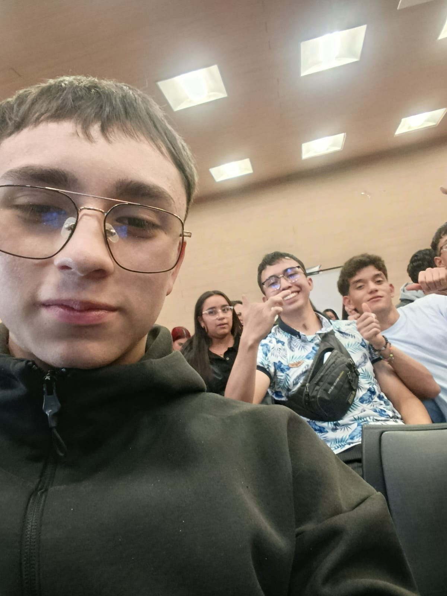
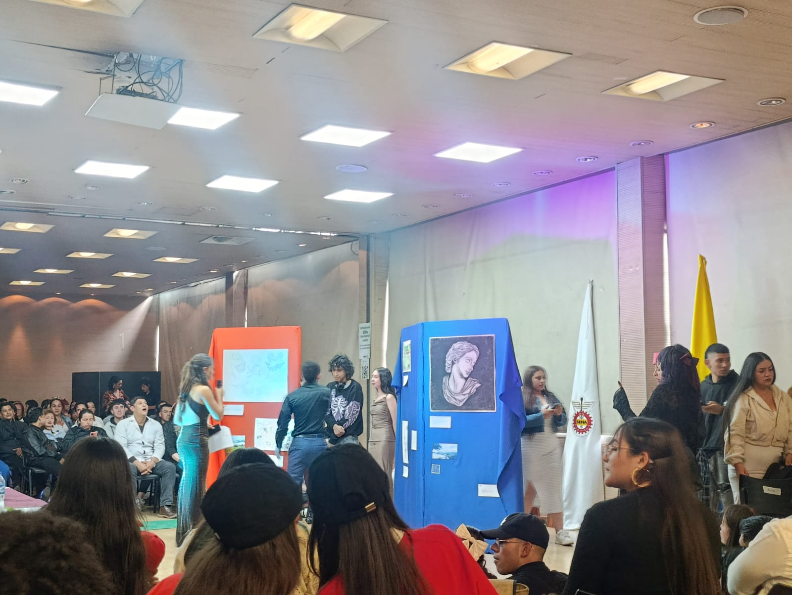
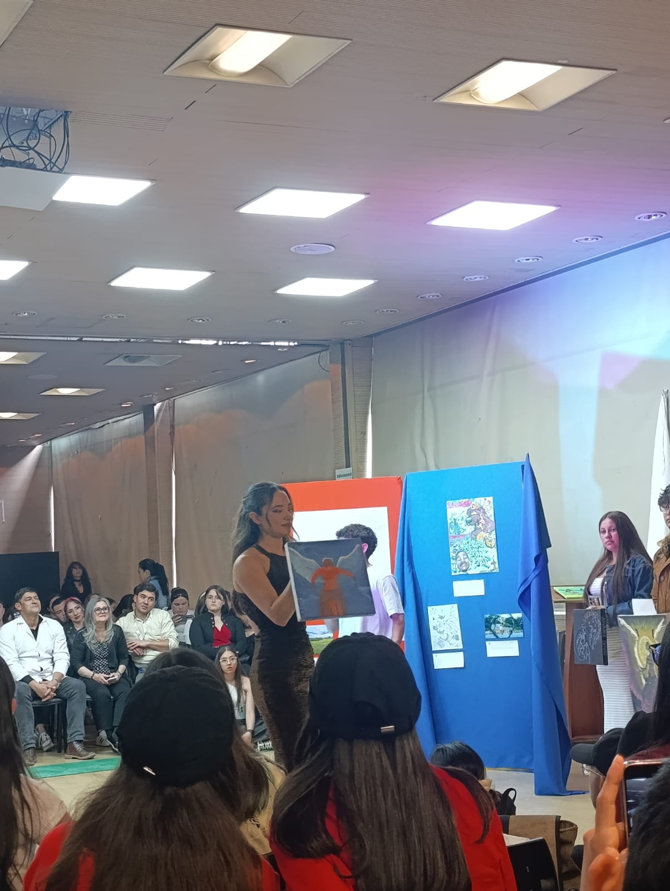
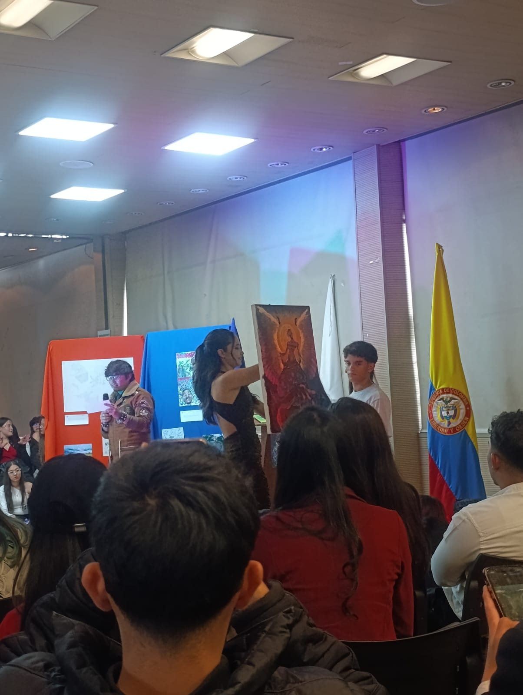
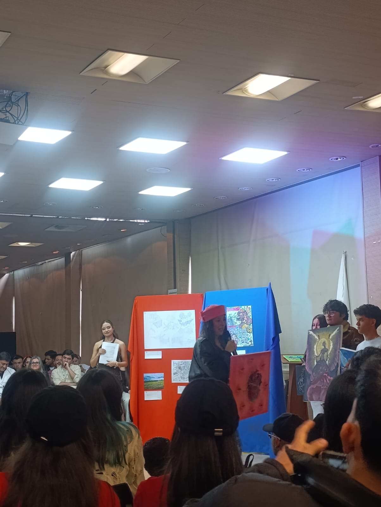
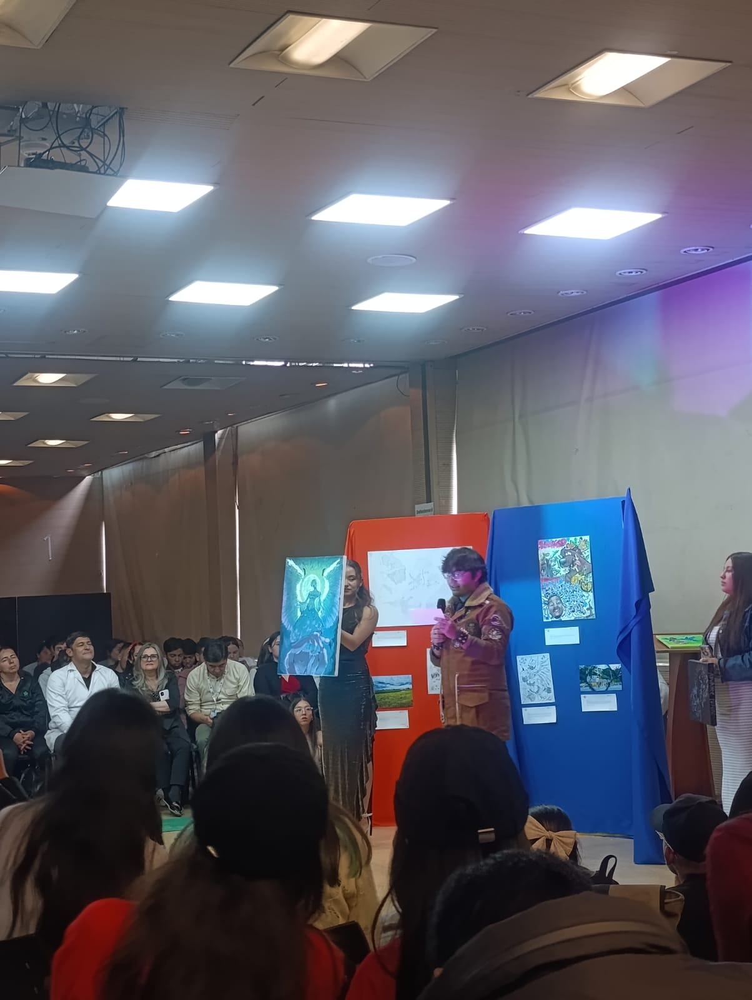

Batalla de talentos
En este evento desarrollado por el CMTC pudimos conocer habilidades de compañeros de diferentes áreas y compañeros del mismo curso, se pudo evidenciar el talento para bailar, cantar, tocar un instrumento, historias, dibujo y arte
Batalla de baile
En la primera batalla pudimos evidenciar las habilidades de nuestros compañeros para el baile donde destaco a mis compañeras que fueron las ganadoras de esta batalla por su increible participacion de realizaron
Batalla de historias
En la segunda batalla se realizaron historias, donde me llamó la atención una en particular, fue realizada por mi compañero de clase, donde muchos nos identificamos con el personaje de la historia

Batalla de dibujo
En esta batalla se evidenció el talento para el dibujo, hubo muchos dibujos que llamaron la atención, pero uno en particular me gustó mucho ya que se evidenciaba el talento para el dibujo y la creatividad de nuestros compañeros

Batalla de arte
En esta batalla pudimos apreciar el arte que tienen nuestros compañeros al momento de pintar, hubo muchas pinturas que llamaron la atención




Batalla de canto
Esta batalla fue muy especial ya que pudimos apreciar la voz que tienen nuestros compañeros para cantar, hubo una canción en particular que me gustó mucho cómo se cantó la cual es La nave del olvido
Batalla de instrumento
En esta batalla se evidenció el talento para tocar instrumentos, un compañero tocó en la guitarra una canción muy popular de nuestras tierras la cual es La cucharita
Palabras clave
- Batalla
- Compañeros
- Talentos
- Arte
- Cultura
- Instrumentos
- Música
- Premios
- Dedicación